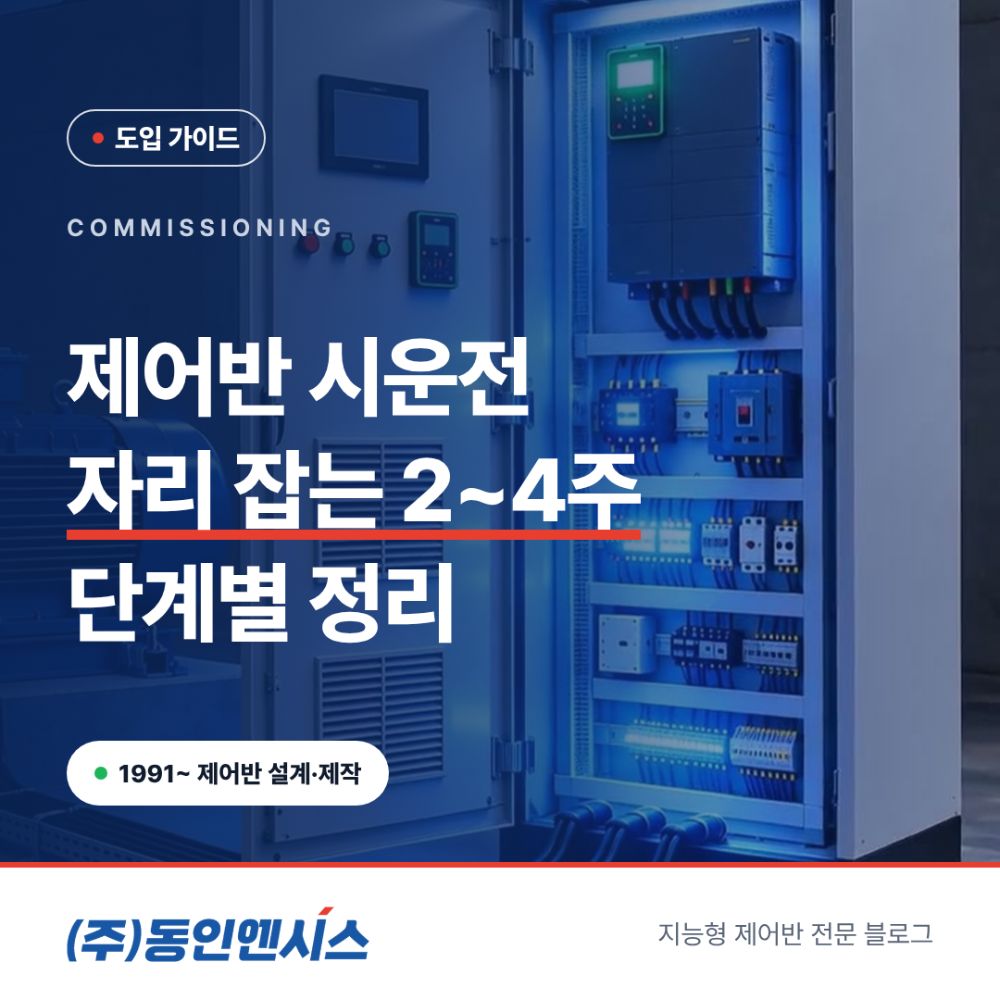
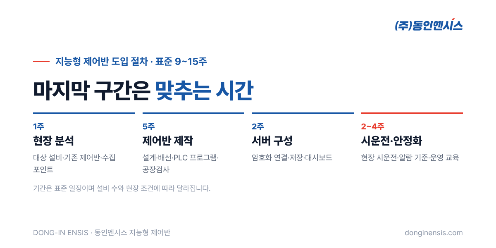
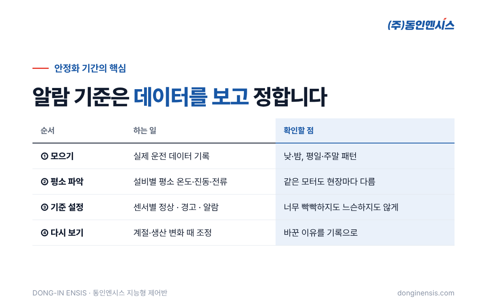

제어반이 공장에 들어와 전원이 켜지는 순간, 많은 분이 이제 끝났다고 생각합니다. 그런데 지능형 제어반은 그때부터 몇 주가 더 필요합니다. 양산과 기장 공장에서 제어반을 직접 설계·제작하고 PLC·인버터 프로그램부터 시운전까지 자체 인력으로 진행하는 동인엔시스는 이 기간을 '자리 잡는 시간'이라고 부릅니다. 이 글에서는 제어반 시운전과 안정화 2~4주 동안 현장에서 무슨 일이 일어나는지 순서대로 정리합니다.
지능형 제어반 도입은 보통 네 구간으로 나뉩니다. 현장 분석에 약 1주, 설계·제작·배선과 공장검사까지 약 5주, 암호화 연결과 저장·대시보드를 갖추는 서버 구성에 약 2주가 들고, 마지막이 시운전·안정화 2~4주입니다. 모두 합하면 표준 9~15주이고, 현장 조건에 따라 길어지거나 짧아집니다.
앞의 세 구간이 '만드는 일'이라면, 마지막 구간은 '맞추는 일'입니다. 동인엔시스 공장에서 진행하는 공장검사로 제어반 자체는 확인을 마쳤지만, 실제 설비와 실제 운전 조건 위에서 움직여 보기 전까지는 알 수 없는 것들이 남아 있습니다. 같은 펌프라도 배관 길이, 설치 장소의 온도, 하루 운전 패턴이 공장마다 다르기 때문입니다.
이 구간의 길이가 2주에서 4주까지 폭이 있는 것도 그래서입니다. 설비 대수가 적고 운전 패턴이 단순하면 짧게 끝나고, 계절이나 생산량에 따라 운전 조건이 크게 바뀌는 현장이라면 그 변화를 조금 더 지켜본 뒤에 마무리합니다.

현장에 제어반이 놓이면 가장 먼저 하는 일은 '움직이기 전 점검'입니다. 운송 중에 흔들려 풀린 단자는 없는지, 현장에서 새로 연결한 전원선과 모터 케이블이 도면대로 들어왔는지, 접지가 제대로 되어 있는지를 하나씩 봅니다.
센서도 이때 함께 확인합니다. 지능형 제어반은 모터 권선온도와 베어링 온도, 진동, 회전속도 같은 값을 받아야 하므로, 센서가 설비의 정해진 위치에 붙어 있고 신호선이 맞는 단자로 들어왔는지가 중요합니다. 여기서 놓친 작은 실수는 나중에 '값이 이상하다'는 형태로 돌아오기 때문에, 전원을 넣기 전에 잡는 편이 훨씬 빠릅니다.
점검이 끝나면 설비를 한 대씩 따로 돌려 봅니다. 모터가 정해진 방향으로 도는지, 인버터 속도 지령에 맞게 회전속도가 따라오는지, 기동할 때 전류가 예상 범위에 있는지를 확인합니다.
이때 제어반 화면에 보이는 값과 현장에서 직접 잰 값이 서로 맞는지도 대조합니다. 화면은 정상인데 실제 설비가 다르게 움직인다면, 그 데이터는 나중에 아무리 쌓여도 믿을 수가 없습니다. 지능형 제어반에서 시운전이 유독 꼼꼼해야 하는 이유가 여기에 있습니다. 제어만 맞으면 되는 것이 아니라, 기록되는 숫자까지 맞아야 합니다.
설비가 각각 잘 돈다는 것이 확인되면, 이제 서로 엮어서 돌려 봅니다. 펌프가 여러 대라면 교대 운전과 동시 운전이 정해진 순서대로 바뀌는지, 한 대가 멈췄을 때 다른 대가 이어받는지를 봅니다.
안전과 직결되는 인터록도 이 단계에서 실제로 동작시켜 확인합니다. 인터록은 '이 조건이 안 되면 설비가 움직이지 않게' 막아 두는 장치입니다. 비상정지 버튼을 눌렀을 때, 보호 장치가 동작했을 때 설비가 정해진 대로 멈추는지를 실제 상황처럼 시험합니다. 이 판단은 서버가 아니라 현장의 PLC가 맡기 때문에, 시운전에서 직접 눌러 보고 확인하는 것이 원칙입니다.
설비가 실제 운전에 들어가면, 데이터 쪽 확인이 본격적으로 시작됩니다. 지능형 제어반이 모은 값이 서버까지 빠짐없이 들어오는지, 시간 순서가 맞는지, 대시보드에서 설비별로 제대로 보이는지를 하루 단위로 살핍니다.
통신이 끊겼을 때의 동작도 일부러 확인해 볼 만합니다. 지능형 제어반은 연결이 끊기면 데이터를 제어반 안에 보관했다가, 다시 연결되면 오래된 순서부터 자동으로 다시 보냅니다. 측정 시각과 순번이 함께 붙어 있어 중복이나 빠진 구간도 확인할 수 있습니다. 실제 운영 중에 처음 겪기보다, 안정화 기간에 한 번 확인해 두면 운영하는 쪽도 안심이 됩니다.
Photorealistic photo of two Korean engineers in work uniforms and safety helmets commissioning a new light-grey industrial control cabinet next to a row of blue centrifugal pumps in a clean factory pump room; one holds a laptop showing generic trend charts, the other checks a clamp meter on a cable; cabinet door open with neat wiring, natural light, no brand logos, no readable text. 3:2 landscape.
안정화 기간의 핵심은 알람 기준을 정하는 일입니다. 지능형 제어반은 센서별로 정해 둔 기준에 따라 설비 상태를 정상·경고·알람 세 가지로 구분하는데, 이 기준을 처음부터 책상에서 정하기는 어렵습니다. 같은 모터라도 현장마다 평소 운전 온도와 진동 수준이 다르기 때문입니다.
그래서 며칠에서 몇 주 동안 실제 운전 데이터를 모은 뒤, 그 설비의 '평소 모습'을 보고 기준을 잡습니다. 기준이 너무 빡빡하면 하루에도 몇 번씩 울리는 경고에 사람들이 지치고, 너무 느슨하면 정작 필요한 순간에 조용합니다. 운전 패턴이 낮과 밤, 평일과 주말에 크게 다르다면 그 차이까지 보고 정하는 것이 좋습니다.
한 번 정한 기준이 영원히 맞는 것도 아닙니다. 계절이 바뀌거나 생산 방식이 달라지면 기준도 다시 볼 필요가 있습니다. 안정화 이후에도 유지관리 과정에서 알람 기준을 조정하는 이유입니다.

마지막은 사람입니다. 아무리 잘 만든 제어반도 매일 보는 담당자가 화면을 읽지 못하면 소용이 없습니다. 운영 교육에서는 대시보드에서 설비 상태를 보는 법, 경고와 알람이 떴을 때 무엇부터 확인할지, 기간별 이력을 찾아보는 법을 실제 화면으로 함께 연습합니다.
교대 근무가 있는 현장이라면 근무조마다 한 명씩은 화면을 읽을 수 있도록 교육 대상을 넓게 잡는 것이 좋습니다. 동인엔시스의 지원은 교육이 끝나고 실제 운영으로 넘어간 뒤에도 원격 상태 확인과 정기 점검, 필요할 때의 현장 대응으로 이어집니다.
Photorealistic photo inside a small factory control room in Korea: an engineer points at a large wall monitor showing a simple equipment status dashboard with green and amber tiles while three plant operators in work clothes take notes, a control cabinet visible through a window behind them, warm indoor light, no brand logos, no readable text. 3:2 landscape.
Q. 시운전 기간에는 공장 생산을 멈춰야 하나요? 현장마다 다릅니다. 기존 제어반을 교체하는 경우에는 교체 작업 동안 설비를 세워야 하므로, 정기 보수 기간이나 휴일에 맞춰 일정을 짜는 경우가 많습니다. 일정은 현장 분석 단계에서 함께 정합니다.
Q. 안정화 기간이 4주보다 길어질 수도 있나요? 설비가 많거나 운전 조건이 계절에 따라 크게 바뀌는 현장은 더 길게 지켜보기도 합니다. 반대로 설비 1~2대로 시작하는 경우에는 짧게 끝나는 편입니다.
Q. 알람 기준은 나중에 우리가 직접 바꿀 수 있나요? 기준값은 운영하면서 조정할 수 있습니다. 다만 기준을 바꿀 때는 왜 바꾸는지 기록을 남겨 두는 것이 좋고, 유지관리 과정에서 함께 검토할 수도 있습니다.
Q. 시운전 때 확인한 내용은 문서로 받을 수 있나요? 시운전에서 확인한 항목과 결과는 정리해 인계하는 것이 일반적입니다. 필요한 양식이 있다면 미리 말씀해 주시면 좋습니다.
제어반 시운전과 안정화는 눈에 잘 띄지 않는 기간이지만, 지능형 제어반이 내놓는 숫자를 믿을 수 있게 만드는 시간입니다. 배선과 센서를 확인하고, 설비를 하나씩 그리고 함께 돌려 보고, 데이터가 빠짐없이 쌓이는지 지켜본 뒤 알람 기준과 운영 교육으로 마무리합니다.
우리 공장 설비에 지능형 제어반을 들이면 일정이 어떻게 잡힐지 궁금하시다면, 동인엔시스 홈페이지의 적용 가능성 진단 신청에 설비 종류와 대수를 남겨 주세요. 엔지니어가 영업일 1~2일 안에 연락드립니다. 전화(051-862-3668)나 메일(dongin@donginmne.com)로 먼저 물어보셔도 됩니다.
아래 질문 중 하나에 실제 경험으로 답해 본문 적당한 곳에 넣어 주세요. 사람이 직접 쓴 문장이 들어가면 네이버에서 저품질 위험이 줄고 노출에 도움이 됩니다.